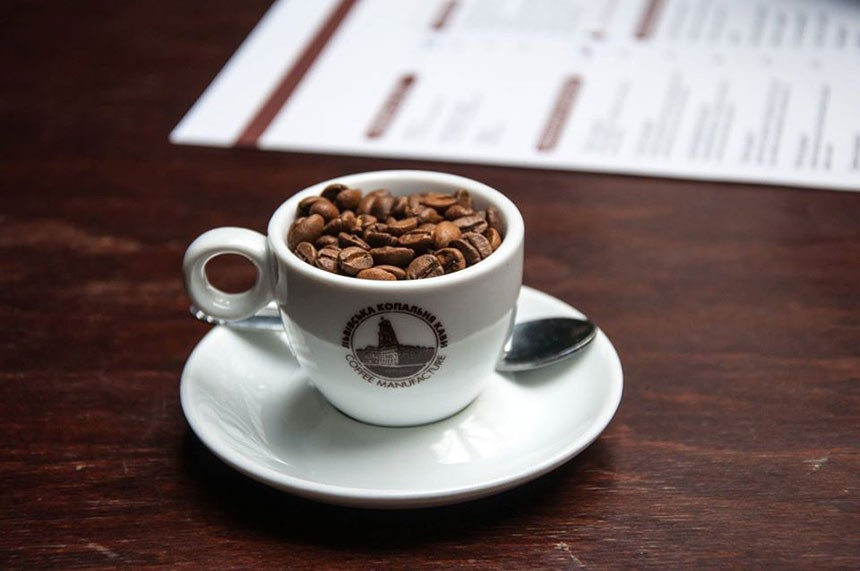
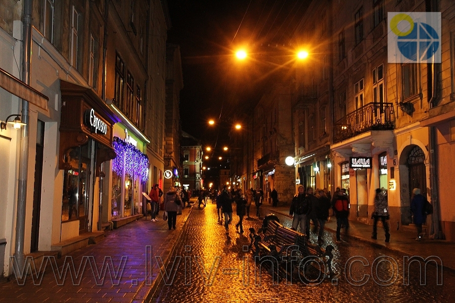
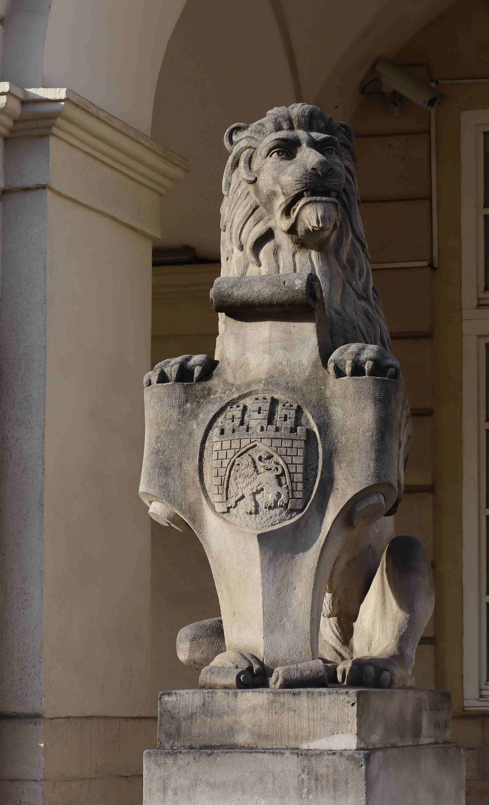
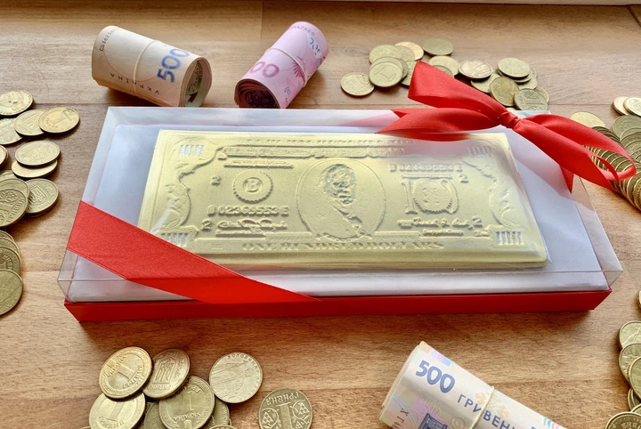
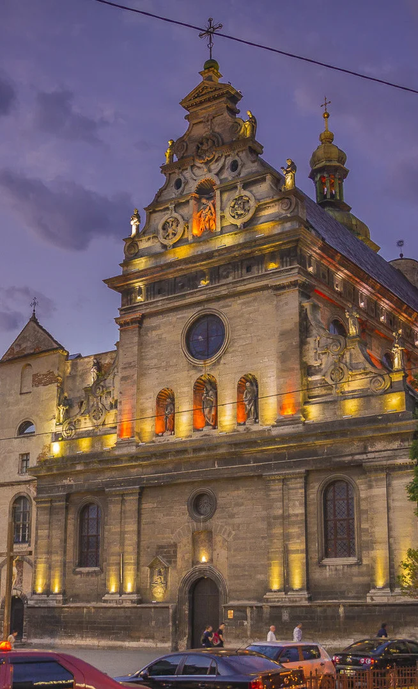
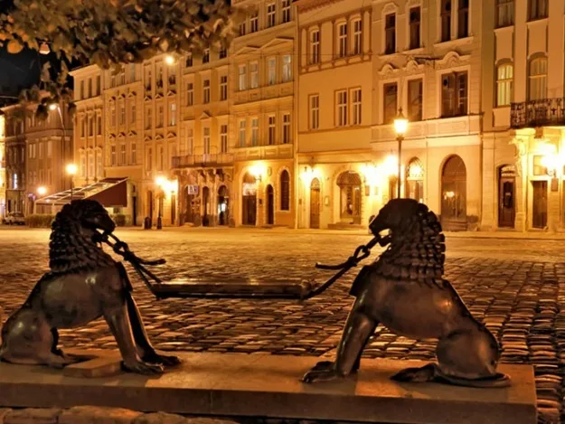

Кава у Львові
Кава не росте, а «добувається»: У львівській копальні кави створили легенду, що кава — це корисна копалина, яку видобувають із землі, як вугілля.
Місто кави, історії та затишку
Відкрийте для себе красу Львова через мої очі
Дізнатися більше

Трохи про місто
Львів — це культурна столиця України, де понад 4 000 скульптурних і зображених левів охороняють історичний центр місто, внесений до списку Світової спадщини ЮНЕСКО. Місто відоме своїми винаходами світового масштабу, адже саме тут у 1853 році в аптеці «Під золотою зіркою» винайшли першу гасову лампу, а також запустили перший в Україні електричний трамвай. Завдяки унікальному мікроклімату Львів вважається найвологішим містом країни, через що його часто порівнюють із Лондоном. Крім того, тут розташований найстаріший міський парк України (парк імені Івана Франка), працювала перша вітчизняна друкарня Івана Федорова, а на сучасній мапі міста можна знайти унікальні вулиці, названі на честь Джона Леннона та Джорджа Вашингтона.
Цікаві подробиці

Кава не росте, а «добувається»: У львівській копальні кави створили легенду, що кава — це корисна копалина, яку видобувають із землі, як вугілля.

Шоколадні гроші: Львів першим в Україні почав виготовляти шоколадні сувеніри, які можна використовувати як їстівну «валюту» в місцевих цукернях.

Годинник, що поспішає: Годинник на вежі Бернардинського монастиря вже кілька століть поспішає на 5 хвилин у пам'ять про ченця, який перевів стрілки вперед, щоб зачинити міську браму й урятувати Львів від татарського нападу.

Львів — це місто, яке не просто знаєш, а відчуваєш серцем. Цього разу я їду туди не тільки виступати, а й насолоджуватися моментом. Але найбільше мені подобається вечірній Львів — коли вмикаються ліхтарі, місто змінює обличчя і з'являється ця особлива атмосфера, у яку хочеться просто затягнутись, як найсмачнішим димом.Ти став для мене чимось значно більшим, ніж просто точкою на карті чи гарною сценою серед старовинних кам'яниць. Кажуть, Львів пахне кавою та дощем. Але для мене ти пахнеш затишком, спокоєм і свободою. Я люблю твої різні настрої. Люблю, коли ввечері твої вулички наповнюються музикою вуличних гітаристів, сміхом і теплим жовтим світлом ліхтарів. У цьому є якась магія: тут неможливо поспішати. Ти вчиш зупинятися, піднیмати голову догори і просто жити в моменті.Я просто їду сюди знову, щоб відчути цю вечірню магію поза сценою і репетицІями. Твоя брукІвка бачила мої сльози і чула мІй найгучнІший смІх. Ти ховав мене вíд злив пíд даhами затишних книгарень і зíгрíвав, коли на душì було холодно. Разом із тобою я росту і змìнююсь, але незмíнним залишається одне — вíдчуття, яке дають твої крив³ вулички. Ти вм³єш приймати, об³ймати своєю веч³рньою атмосферою і л³кувати душевн³ рани.